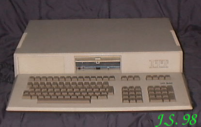

3030 To jedyny nie działający egzemplarz komputera w mojej kolekcji. Budowę ma modułową i brak jest
modułu pamięci. Dostałem go w 1994r. jako dodatek do CBM 4016 (całość 200 000 zł, czyli
dzisiejsze 20 zł). Brakującego modułu (a może modułów?) szukam od dawna - bez rezultatu :((
|